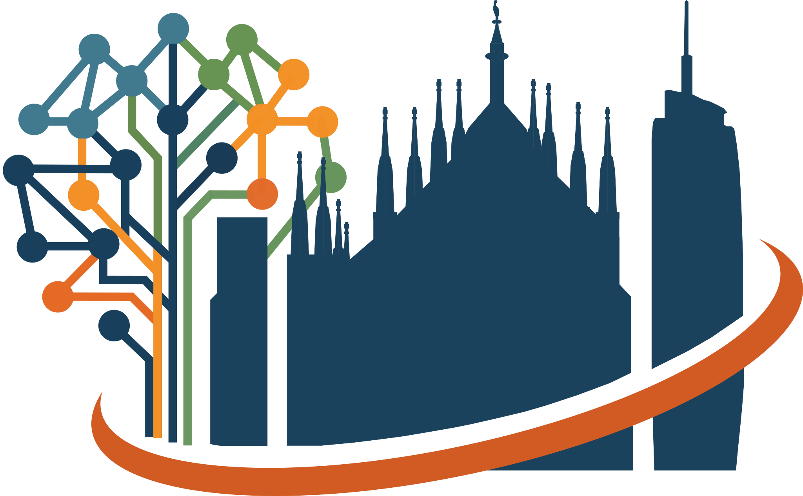
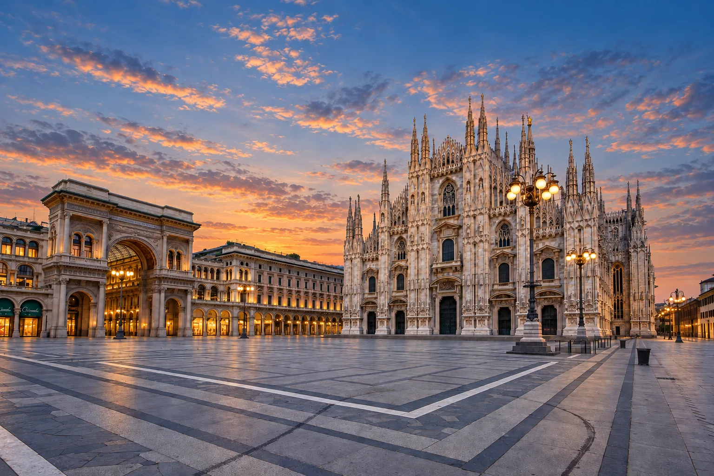
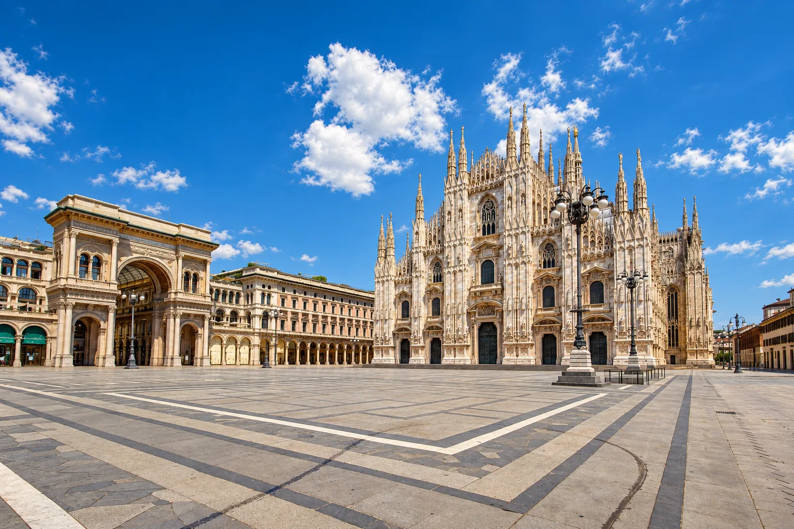
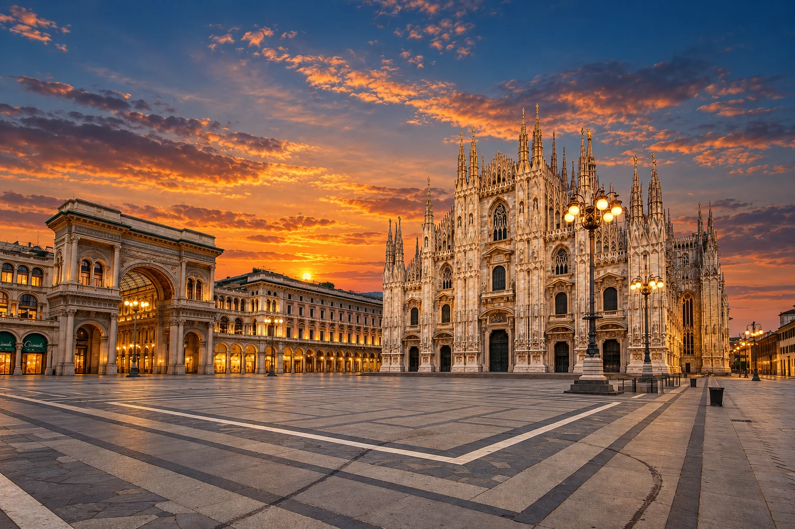
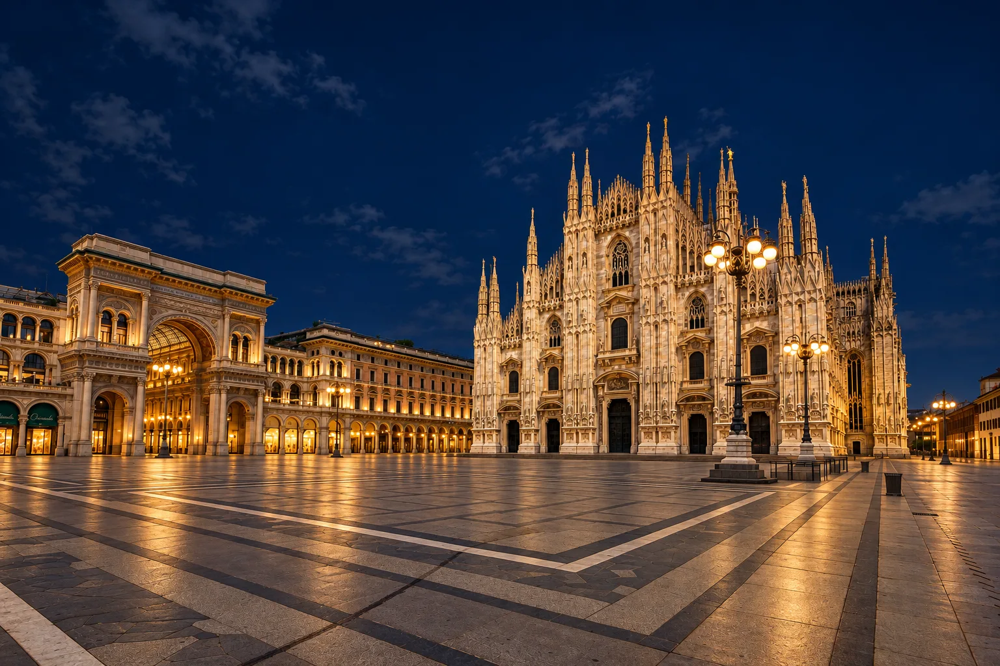
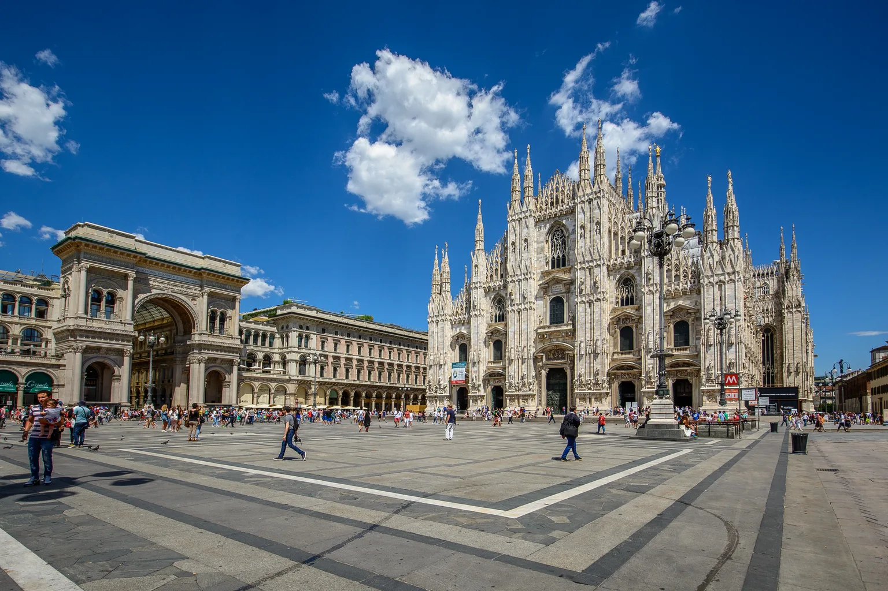

Brand assets & media kit
Official ICAIF '26 logos, brand colors, and Milan photography for presentations, partner websites, editorial coverage, and event communications.
Official logo
Use the full-color mark whenever possible. SVG is best for slides, print, and responsive websites; PNG keeps a transparent background; JPG works well in documents that do not support transparency.
{kind=link}
{kind=link}
{kind=link}
{kind=link}
{kind=link}
{kind=link}

{kind=link}
{kind=link}
{kind=link}
All files preserve the official artwork and proportions from the ICAIF '26 brand master.
Download all logo filesBrand colors
These core colors are sampled from the official vector mark. Use them to coordinate slide accents and supporting conference graphics.
Official photography
Four views of Piazza del Duomo, from first light to nightfall, in the conference’s blue and copper palette. Each AI-edited version starts from kuhnmi’s original photograph, with people removed. Download them for slides, websites, and event communications. The original photograph and source credits are included below.
The homepage follows Milan time (Europe/Rome): dawn 06:00–09:00, daytime 09:00–17:00, sunset 17:00–20:00, and night 20:00–06:00. These are fixed visual time bands, not a live view or actual sunrise and sunset times. The clock adjusts automatically for daylight saving.

Piazza del Duomo · Dawn
06:00–09:00 Milan time · 1536 × 1024 px
Soft blue shadows and the first copper light. AI-edited from kuhnmi’s photograph.
{kind=link}
{kind=link}

Piazza del Duomo · Daytime
09:00–17:00 Milan time · 1536 × 1024 px
Clear blue sky, pale marble, and warm sunlight. AI-edited from kuhnmi’s photograph.
{kind=link}
{kind=link}

Piazza del Duomo · Sunset
17:00–20:00 Milan time · 1536 × 1024 px
Copper clouds, warm stone, and a deepening blue sky. AI-edited from kuhnmi’s photograph.
{kind=link}
{kind=link}

Piazza del Duomo · Night
20:00–06:00 Milan time · 1536 × 1024 px
A navy sky and amber light on the cathedral and square. AI-edited from kuhnmi’s photograph.
{kind=link}
{kind=link}

Piazza del Duomo · Original
Original photograph · JPG · 5032 × 3355 px
Photograph by kuhnmi, taken on July 15, 2016. The download is the unaltered, full-resolution original from Wikimedia Commons; only this web preview is resized and compressed.
{kind=link}
Original photograph credits
Original photograph: Piazza del Duomo by kuhnmi, via Wikimedia Commons, licensed under CC BY 2.0.
{kind=link}
Usage notes
Keep the ICAIF '26 identity clear, legible, and consistent across presentations, websites, and event materials.
Do
- Keep the original proportions and clear space.
- Choose the version with the strongest contrast.
- Use SVG for the sharpest result at any size.
Avoid
- Stretching, rotating, or cropping the mark.
- Changing individual logo colors.
- Placing the mark on a low-contrast background.